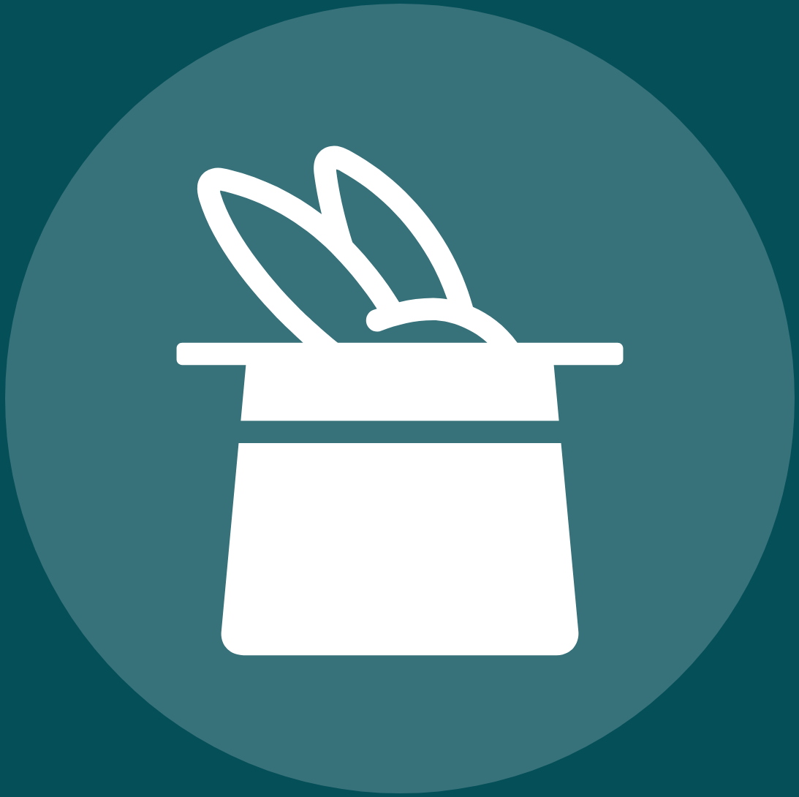

I founded AI Transformation (t12n.ai) because I kept seeing the same pattern: smart leaders at great companies, frozen. Not by lack of ambition — but by the gap between knowing AI matters and knowing what to actually do about it.
My work sits at the intersection of executive strategy, technical implementation, and organizational change. I don't just advise — I embed, build, and help you run.
Before t12n, I led AI initiatives at Fortune 500 companies and venture-backed startups alike. I've seen what separates organizations that thrive in this moment from those that don't. It's almost never about the technology.
It's about speed of decision, clarity of ownership, and the courage to move before everything is certain. That's what I help you build.